Mini sélection de bons plans à faire en Martinique 🏝. Tout est parti de ce tweet. N'hésitez pas à me contacter pour toute suggestion!
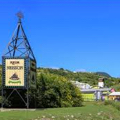
1Distillerie Neisson
Distillerie
Domaine Thieubert, Le Coin, 97221 Le Carbet
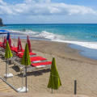
2Petitbonum
Restaurant
Plage du Coin, 97221 Le Carbet
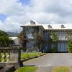
3Distillerie Depaz
Distillerie
Plantation de la Montagne Pelée, 97250 Saint-Pierre
4Sculpture sous l'eau
Art
97250 Saint-Pierre
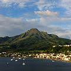
5Montagne Pelée
Nature
97250 Saint-Pierre
6Trace des jésuites / Saut du gendarme
Randonnée, Cascade
D1, Fonds-Saint-Denis
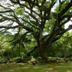
7Habition Céron
Culture
Anse Céron, 97250 Saint-Pierre
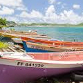
8Marche + bateau
Randonnée
Prêcheur - Grand Rivière
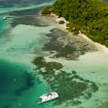
1Les ilets et fonds blancs
Plage
97231 Robert
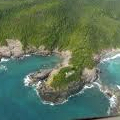
2Presqu'île de la Caravelle
Nature
97220 La Trinité
3Le Tombolo
Nature
97230 Sainte-Marieque
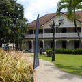
4Distillerie St-James
Distillerie
Plaine de l'Union, 97230 Sainte-Marie
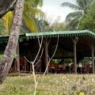
5Le point de vue
Restaurant
Anse Charpentier, 97230 Sainte-Marie
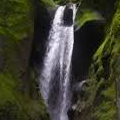
6Les gorges de la falaise
Cascade
97216 Ajoupa Bouillon
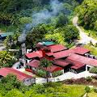
7Distillerie JM
Distillerie
Fonds Préville, 97218 Macouba
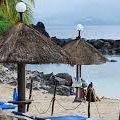
1Le Lilli's / Casino
Bar, Restaurant
Rue des Alyzées - Plage de l'hôtel Batelière, 97233 Schoelcher
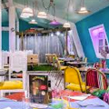
2Le Steal Pan
Restaurant
Centre Commercial La Veranda, rond-point du Viétnam Héroïque, 97200 Fort-de-France
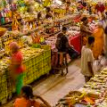
3Marché / Fort St Louis
Culture
Rue Blenac, 97200 Fort-de-France

4Distillerie La Favorite
Distillerie
Route de Lamentin, 97200 Fort-de-France
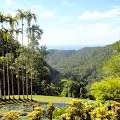
5Jardin de Balata / Absalon
Nature, Cascade
Route de Balata, 97234 Fort-de-France
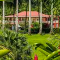
6Distillerie HSE
Distillerie
97213 Gros-Morne
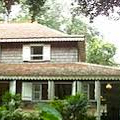
1Habitation Clément
Distillerie
domaine de l'acajou, 97240 François
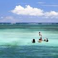
2Baignoire de Joséphine
Nature
Port de pêche du François D6 presqu'île du François, 97240 François
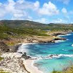
3Trace des Caps
Randonnée
97280 Vauclin
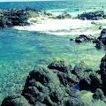
4Oeuil Bleu
Nature
Cap Ferré, 97227 Sainte-Anne
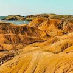
5Savane des pétrifications
Randonnée
97227 Sainte-Anne
6Les Salines
Nature
Plage des Salines, 97227 Sainte-Anne
7La Dunette
Bar
Rue Jean Marie Tjibaou, 97227 Sainte-Anne
8Pointe Borgnesse
Nature
97290 Marin
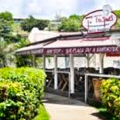
9Ti-Togue
Restaurant
Immeuble Odyssée Port de plaisance, 97290 Marin
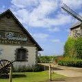
10Distillerie Trois-Riviere
Distillerie
Quartier Trois Rivières, 97228 Sainte-Luce
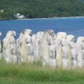
11Mémorial de l'Anse Caffard
Culture
Anse Cafard, 97223 Le Diamant
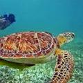
12Plongé / Nager avec les tortues
Nature
97217 Anse-d'Arlet
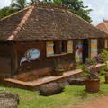
13Village de la Poterie
Culture
Route des Trois-Îlets, 97229 Trois-îlets
Réalisé par hellocelia.fr selon une carte originale de @ShantyySweetyy